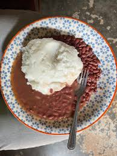
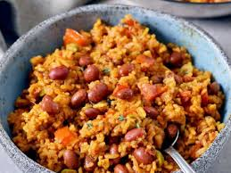

The following are our recipes
Ingredients
- chicken
- royco
- salt
- matooke
- spices ie tomatoes , onions
Proceedures
- peal the matooke and cut the chicken into sizable pieces
- boil both them simultaneously and grind th matooke when its done
- after fry the chicken using the spices after which put some royco

ingredients
- posho floor
- beans
- spices ie tomatoes and onions
- royco
Proceedures
- sort the beans and put them on fire
- when the beans are almost ready put the eater for the posho
- after fry the beans using the spices and royco after which you mingle the posho

ingredients
- rice
- beans
- spices ie tomatoes and onions
- royco
Proceedures
- sort the beans and put them on fire and as you sort the rice and also put it on fire
- when the beans are almost ready reduce the fire for rice and leave it to rest
- after fry the beans using the spices and royco